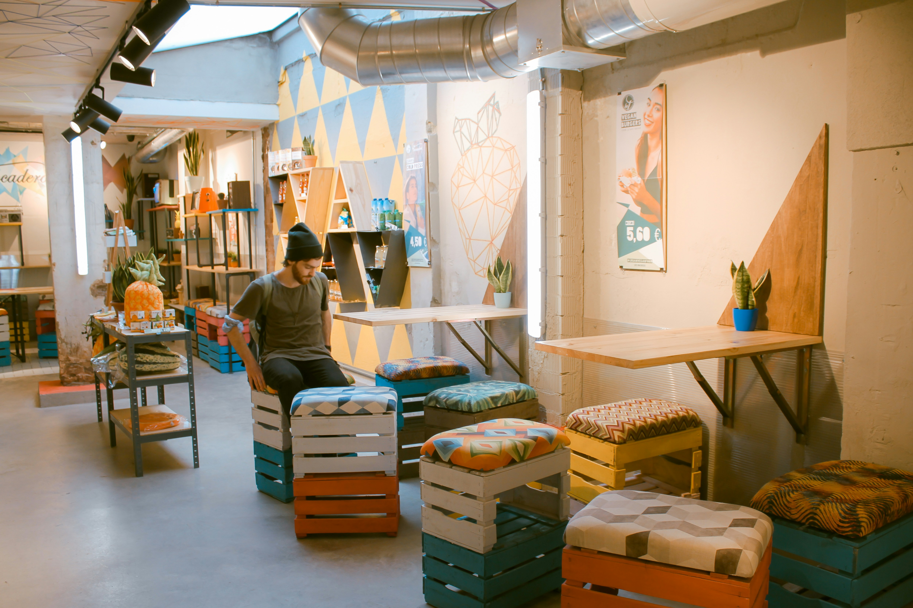

Tilat ja Palvelut
Tervetuloa tekemään!
Tarjoamme monipuoliset tilat käsitöihin, rakenteluun, digitaaliseen suunnitteluun ja elektroniikkaprojekteihin. Tilamme on suunniteltu tukemaan luovuuttasi, olipa kyseessä pientä fiksailua tai jotain suurempaa!
Merenranta Makersin jäsenenä pääset käyttämään tilojamme vapaasti klo 8–22 välillä joka päivä. Työskentelyn aikana voit säilyttää henkilökohtaisia tavaroitasi kuten takkia ja reppua loungen pukukaapeissa. Pukukaapit avataan ja lukitaan kulkukortilla eikä niihin tarvita erillistä panttia.
Tutustu Merenranta Makersin jäsenetuihin ja sääntöihin.
Elektroniikkatila & Lounge

Elektroniikkatilan resursseja
Elektroniikka soveltuu "siisteihin sisätöihin" kuten elektroniikan parissa puuhailuun. Saatavilla on myös vaihteleva valikoima erilaisia elektroniikan komponentteja jäsenten käytettäväksi.
- 4 suurta työskentelypöytää
- juotosasema
- oskilloskooppeja, virtalähteitä, muuntajia
- 3 kpl yhteisiä tietokoneita
- 3 kpl 3D-tulostimia
- ... ja paljon muuta!
Loungessa on hyvä rentoutua
Voit tulla Merenranta Makersille myös vain viettämään aikaa ja rentoutumaan loungessa! Lounge ja elektroniikkatila ovat samaa tilaa. Loungesta löydät pelikonsoleita eri vuosikymmeniltä, lautapelejä moneen lähtöön sekä ajankohtaista luettavaa. Loungesta löydät myös pukukaapit ja ilmoitustaulun.
Puuverstas ja metallityöt

Puu- ja metallityötilamme on suunniteltu monipuoliseen tekemiseen. Verstaalla voit työstää niin massiivipuuta, vaneria kuin terästäkin – olipa kyseessä huonekalun kunnostus, pyörän rungon korjaus tai uuden prototyypin rakentaminen. Voit käyttää vapaasti verstaalle jääneitä, mutta varsinainen työmateriaali sinun on hankittava itse.
Koneet ja resurssit
- Puuverstas: Oikotasohöylä, vannesaha, jiirisaha ja purunpoisto
- Metallityöt: MIG/MAG-hitsauskone, kulmahiomakone ja pylväsporakone
- Käsityökalut: Akkuporakoneet, taltat ja hiomakoneet
Laserleikkuri
Tarkkuutta vaativiin projekteihin tarjoamme tehokkaan laserleikkurin. Sillä leikkaat ja kaiverrat vaivatta puuta, akryylia, nahkaa ja monia muita materiaaleja. Olipa kyseessä piensarjatuotanto, lahjaesine tai tekninen prototyyppi, laserleikkuri tuo ammattimaisen lopputuloksen käden ulottuvillesi.
Yhteiskeittiö
Luova työ vaatii polttoainetta! Viihtyisä yhteiskeittiömme on jäsenten vapaassa käytössä. Voit keittää kahvit, lämmittää omat eväät tai istahtaa hetkeksi vaihtamaan ajatuksia muiden tekijöiden kanssa. Nautithan evääsi aina keittiössä, jotta muut tilat säilyvät siisteinä.
Keittiön varustus
- tiskiallas
- mikroaaltouuni ja airfryer
- vedenkeitin ja kahvinkeitin
- astioita ja ottimia
- yleissiivousvälineet
Turvallisuus

Turvallisuus on meille ykkösasia. Jos jokin laite ei ole sinulle tuttu, autamme aloittamisessa enemmän kuin mielellämme. Merenranta Makers on varustettu asianmukaisilla suojavarusteilla, ensiapupisteillä ja poistumisopasteilla. Huolehtimalla työturvallisuudesta varmistamme, että tekeminen pysyy kaikille mieluisana ja turvallisena.